Correo corporativo
Accede a tu buzón de Essad para enviar y recibir correos internos y externos.
Abrir servicio
Este portal unifica el acceso a los servicios de TI de Essad, para que puedas entrar rápidamente a correo, mesa de ayuda, aplicaciones internas y otros recursos tecnológicos.
Accede a tu buzón de Essad para enviar y recibir correos internos y externos.
Abrir servicioLevanta y consulta tickets de soporte para incidentes y solicitudes de TI.
Abrir servicioConéctate de forma segura a los recursos internos de la NAS en caso de contingencia.
Abrir servicioEsta sección está dedicada a cursos de seguridad de la información, donde aprenderás a proteger datos, gestionar riesgos, cumplir normativas y fortalecer tu área frente a las amenazas digitales actuales.
Abrir servicioConoce como levantar tickets y el proceso que se llevará a cabo para tu atención.
Abrir manual